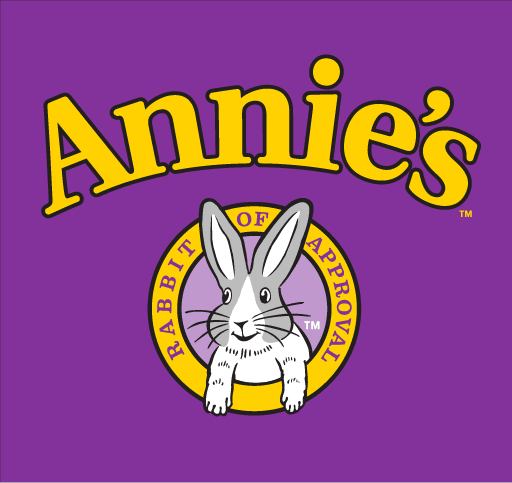
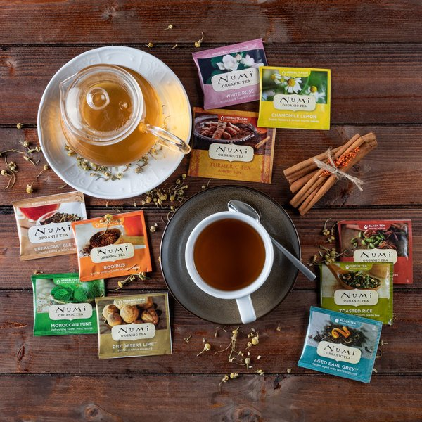
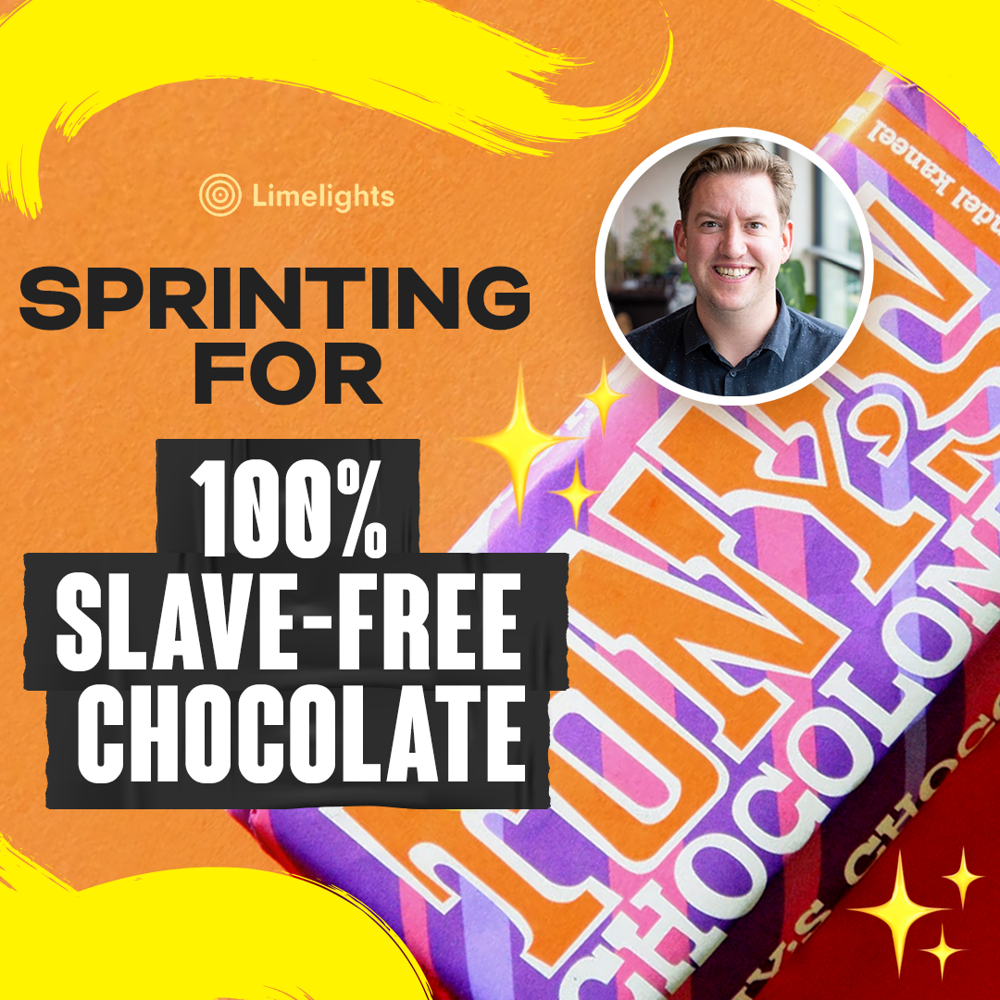
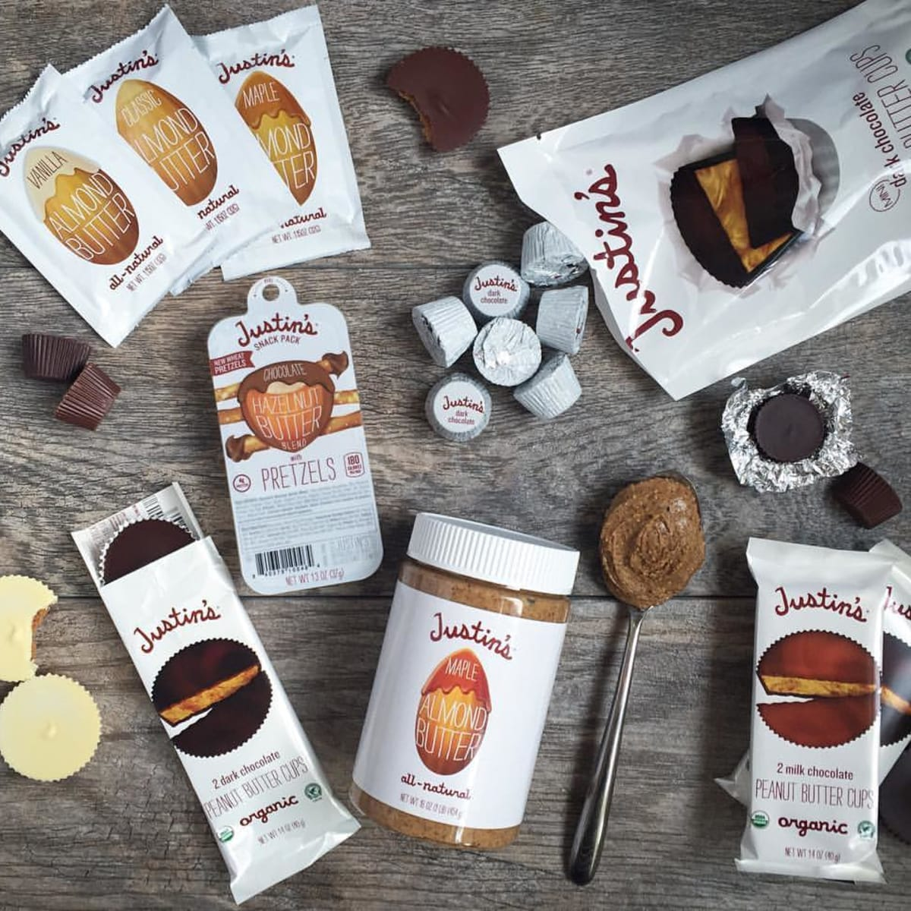
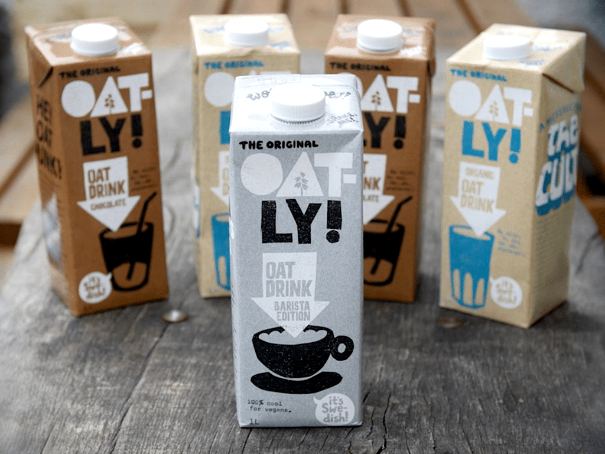
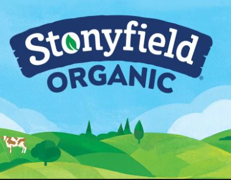

We believe food has the power to impact the future of the planet and everybody on it. From partnering with the farmers who grow our food, to thoughtfully choosing the packaging that our food is shipped in – we’ve always had your family and our planet in mind.






